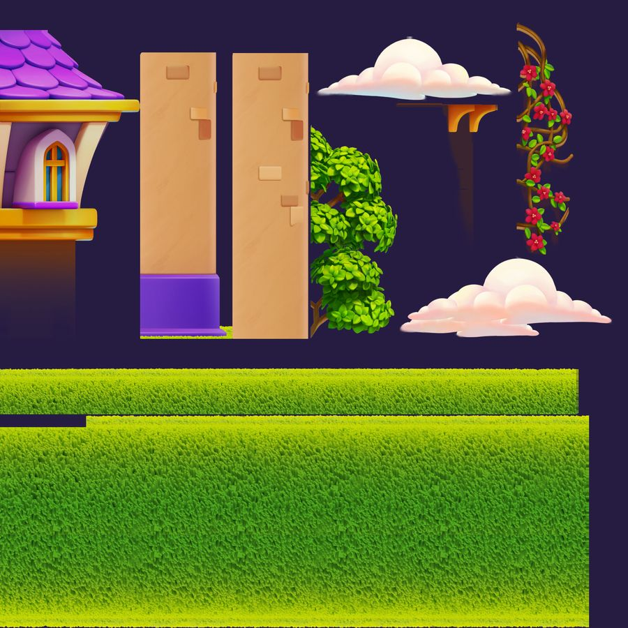

Tháp chuỗi thắng (Tower Win Streak)
Dùng mất toàn bộ chuỗi làm sức ép giữ chiến thắng; mục tiêu rương dài đòi hỏi quyết định tiếp tục hay chấp nhận bắt đầu lại.
Chưa có case chính trong hai lượt review 15–16/11. Nội dung theo mã/config; ảnh ngữ cảnh không được tính thành playtest tính năng. Xem bằng chứng và phần còn thiếu.
Thiết kế chi tiết
Tóm tắt thiết kế
Dùng mất toàn bộ chuỗi làm sức ép giữ chiến thắng; mục tiêu rương dài đòi hỏi quyết định tiếp tục hay chấp nhận bắt đầu lại.
Thắng liên tiếp → leo tháp → nhận rương → thua về 0 → thử lại.
Diễn giải thiết kế từ nguồn đã đối chiếu; outcome là expected, không phải lượt playtest mới. Các giá trị default/native có build riêng, không tự coi đang hiệu lực production.
Chưa có ảnh chụp màn hình cho tính năng này trong nguồn đã kiểm. Ảnh tài nguyên (nếu có) nằm ở hồ sơ hình ảnh; không thay cho screenshot playtest.
Luồng người chơi từng bước
- 01
Leo một bậc
Người chơi và hệ thốngThắng level và quay về Home.
Điều kiện / luật: Chuỗi thắng tăng; các mốc chính trong nguồn là 3/6/11/16/22/30/40.
Kết quả theo đặc tả: Tiến gần rương kế tiếp.
- 02
Mất chuỗi
Người chơi và hệ thốngThua hoặc bỏ level.
Điều kiện / luật: Tower bản v1 đưa chuỗi về 0; không có luật rơi về checkpoint như Broom bản v2.
Kết quả theo đặc tả: Mèo hoặc chổi rơi và chuỗi bắt đầu lại.
- 03
Nhận rương đã vượt
Người chơi và hệ thốngVượt mốc thưởng và xem quà.
Điều kiện / luật: Rương có coin, booster và mạng theo thời gian; kỷ lục trong event khác kỷ lục mọi thời.
Kết quả theo đặc tả: Quà và kỷ lục được cập nhật theo đúng trường trạng thái.
Quy tắc cần nắm
| Quy tắc | Hành vi theo nguồn | Căn cứ |
|---|---|---|
| Leo một bậc | Chuỗi thắng tăng; các mốc chính trong nguồn là 3/6/11/16/22/30/40. | |
| Mất chuỗi | Tower bản v1 đưa chuỗi về 0; không có luật rơi về checkpoint như Broom bản v2. | |
| Nhận rương đã vượt | Rương có coin, booster và mạng theo thời gian; kỷ lục trong event khác kỷ lục mọi thời. |
Số liệu & phần thưởng
Phần thưởng
PHẦN THƯỞNG MỐC THÁP (TowerWinStreakConfigModel.json, client default)
| Mốc | Điều kiện | Phần thưởng |
|---|---|---|
| Step 0 | Mốc gốc | Không có phần thưởng |
| Mốc 1 (Step 3) | Thắng 3 level liên tiếp | 1 rương:  30 coin 30 coin |
| Mốc 2 (Step 6) | Thắng 6 level liên tiếp | 1 rương:  15 phút Unlimited Lives 15 phút Unlimited Lives |
| Mốc 3 (Step 11) | Thắng 11 level liên tiếp | 1 rương: 300 coin |
| Mốc 4 (Step 16) | Thắng 16 level liên tiếp | 1 rương:  1 Undo 1 Undo |
| Mốc 5 (Step 22) | Thắng 22 level liên tiếp | 1 rương:  1 Extra Bottle 1 Extra Bottle  1 Shuffle 1 Shuffle |
| Mốc 6 (Step 30) | Thắng 30 level liên tiếp | 1 rương: 1000 coin 1 Undo |
| Mốc 7 (Step 40) | Thắng 40 level liên tiếp (mốc cuối) | 1 rương: 2000 coin 1 Extra Bottle 1 Undo 1 Shuffle 2 giờ Unlimited Lives |
MÃ CURRENCY TRONG BẢNG THƯỞNG
| Mã | Loại | Ghi chú |
|---|---|---|
| 1 | Coin | Amount là số coin |
| 2 | Life | amount = 0 kèm timeSpan → Unlimited Lives theo thời gian |
| 4 | Undo | Booster |
| 5 | Shuffle | Booster |
| 6 | ExtraBottle | Booster |
| 13 | Chest | Vỏ rương chứa danh sách Rewards |
TRẠNG THÁI SỰ KIỆN (TowerWinStreakStateType)
| Mã | Trạng thái | Ý nghĩa |
|---|---|---|
| 0 | NoCachedEvent | Chưa fetch được sự kiện |
| 1 | NotIntroduced | Chưa giới thiệu cho người chơi |
| 2 | InProgress | Đang chạy chuỗi tăng/giảm bình thường |
| 3 | TimeIsUp | Hết giờ chờ nhận |
| 4 | Claimed | Đã nhận |
| 5 | ClaimedAndTimeIsUp | Đã nhận và hết giờ |
| 6 | InsufficientLevel | Level dưới FirstLevelToShow |
| 7 | Disable | IsEnabled = false |
Phần thưởng theo code
| Ngữ cảnh | Phần thưởng | Evidence |
|---|---|---|
| Chuỗi 3 thắng | Rương: 30 Coin | TowerWinStreakConfigModel.json Steps[1] |
| Chuỗi 6 thắng | Rương: Unlimited Life 15 phút | TowerWinStreakConfigModel.json Steps[2] |
| Chuỗi 11 thắng | Rương: 300 Coin | TowerWinStreakConfigModel.json Steps[3] |
| Chuỗi 16 thắng | Rương: 1 Undo | TowerWinStreakConfigModel.json Steps[4] |
| Chuỗi 22 thắng | Rương: 1 ExtraBottle 1 Shuffle | TowerWinStreakConfigModel.json Steps[5] |
| Chuỗi 30 thắng | Rương: 1000 Coin 1 Undo | TowerWinStreakConfigModel.json Steps[6] |
| Chuỗi 40 thắng (mốc cuối) | Rương: 2000 Coin 1 ExtraBottle 1 Undo 1 Shuffle Unlimited Life 2 giờ | TowerWinStreakConfigModel.json Steps[7] |
Số liệu chính
| Chỉ số | Giá trị | Nguồn |
|---|---|---|
| Level mở khoá | 50 | TowerWinStreakConfigModel.FirstLevelToShow |
| Trạng thái bật/tắt mặc định | false | TowerWinStreakConfigModel.IsEnabled |
| EventType (tournamentType gửi backend) | 1 | TowerWinStreakConfigModel.EventType |
| Hiện icon trong màn chơi | true | TowerWinStreakConfigModel.ShouldShowInLevelIcon |
| Danh sách mốc chính | 3, 6, 11, 16, 22, 30, 40 | TowerWinStreakConfigModel.json Steps[1..7] |
| Coin mốc 3 | 30 | Steps[1].RewardModel.Rewards[0].Amount |
| Unlimited Lives mốc 6 | 00:15:00 | Steps[2].RewardModel.Rewards[0].timeSpan |
| Coin mốc 11 | 300 | Steps[3].RewardModel.Rewards[0].Amount |
| Coin mốc 30 | 1000 | Steps[6].RewardModel.Rewards[0].Amount |
| Coin mốc 40 | 2000 | Steps[7].RewardModel.Rewards[0].Amount |
| Unlimited Lives mốc 40 | 02:00:00 | Steps[7].RewardModel.Rewards[4].timeSpan |
| EarnReason khi trả thưởng mốc | 10 | TowerWinStreakService.GiveRewardsBetweenLastSeenAndCurrentWinCount |
| Điều kiện reset chuỗi | GetEventState() == 2 (InProgress) | TowerWinStreakService.TryResetWinStreak |
| Số trạng thái sự kiện | 8 (NoCachedEvent=0 … Disable=7) | TowerWinStreakStateType |
| Số nguồn mở popup | 6 (None=0 … TryAgain=5) | TowerWinStreakSource |
| Trạng thái hoạt ảnh mèo | Rise=0, Idle=1, Fall=2 | TowerActionState |
| Khoảng cách giữa 2 mốc chính | 7.5 | TowerWinStreakBannerConfig.DistanceBetweenMainSteps |
| Thời gian mở khoá mốc | 0.6 giây | TowerWinStreakBannerConfig.RevealMainStepTime |
| Tỉ lệ phóng to mốc chính | 1.25 | TowerWinStreakBannerConfig.MainStepEnlargeScale |
| Animation vòng tròn nút lobby | 1 giây, delay 0.7 giây | TowerWinStreakLobbyButtonAnimationConfig |
| Tên khối sync | TowerWinStreakModel | TowerWinStreakDataService.GetSyncName |
| Endpoint lấy sự kiện | /v1/get-winstreak-tournament | towerWinStreakEventInfoUrl |
Các quyết định trong luồng
| Tình huống | Cách xử lý theo nguồn | Căn cứ |
|---|---|---|
| Điểm khác với Broom Streak cần hiện ở đâu? | Ngay luật thua và cảnh báo thoát: reset về 0 là mức mất mát khác checkpoint, không chỉ là thay hình ảnh. | Suy luận thiết kế từ cơ chế có nguồn, chưa đo hiệu quả. |
Nhánh lỗi và phục hồi
| Điều kiện | Hành vi mong đợi | Phạm vi đã kiểm |
|---|---|---|
| Gián đoạn hoặc kết thúc Tháp chuỗi thắng (Tower) | Offline hoặc kết thúc event cần tách mốc đã nhận, chuỗi hiện tại và kỷ lục; không reset mọi trường cùng lúc. | Theo source và UC trong dossier; các dependency backend/sync/RNG vẫn cần kiểm riêng. |
Nhận định & vận dụng
Ngay luật thua và cảnh báo thoát: reset về 0 là mức mất mát khác checkpoint, không chỉ là thay hình ảnh.
Phân tích thiết kế, không phải kết quả đo cohort.
Ảnh chụp bổ sung & nguồn bằng chứng
Chưa có screenshot trong nguồn hiện có; giữ mục này để bổ sung khi có bằng chứng.
Case đầy đủ: expected, actual và ledger · Ảnh lịch sử và tài nguyên gốc
Tổng quan & điều kiện mở
Mô tả
- Mỗi level thắng liên tiếp đưa con mèo leo lên một bậc của tòa tháp; thua hoặc bỏ level làm mèo rơi và chuỗi reset về 0.
- Bảy mốc chính 3, 6, 11, 16, 22, 30, 40 trả thưởng dạng rương chứa coin, booster và Unlimited Lives theo thời gian.
- Người chơi giữ hai kỷ lục: MaxWinCount trong sự kiện hiện tại và MaxWinCountRecord xuyên mọi sự kiện.
- Sự kiện chạy theo khung thời gian server lấy từ endpoint /v1/get-winstreak-tournament.
- Bảng mốc thưởng được chụp lại khi sự kiện bắt đầu, nên đổi remote config giữa chừng không ảnh hưởng người đang chơi.
- Chuỗi được tính ở client và có model/cache cục bộ. Chưa kiểm mọi điểm gián đoạn, reset kỳ hoặc force-fetch; không suy thành bảo đảm không mất tiến độ khi mất mạng.
- Sự kiện xuất hiện ở nhiều điểm chạm: nút lobby có vòng tròn tiến độ, banner tháp, icon trong màn chơi và popup tự mở.
- Màn hình 'Are You Sure' riêng hiển thị tháp cùng số chuỗi sắp mất để giữ chân người chơi trước khi thoát.
- Nút Try Again sau khi thua mở lại popup tháp với nguồn TryAgain(5), thúc đẩy chơi tiếp ngay.
- Trong analytics, sự kiện này dùng tên 'broom_streak_*' (bản v1), khác với BroomStreak dùng hậu tố '_v2'.
Mở khóa & điểm vào
TowerWinStreakStateService.GetEventState(): trả Disable(7) nếu TowerWinStreakConfigModel.IsEnabled == false; InsufficientLevel(6) nếu level < FirstLevelToShow; NoCachedEvent(0) nếu chưa fetch được sự kiện. Client default: IsEnabled = false, FirstLevelToShow = 50, EventType = 1 (Resources/defaultconfigs/TowerWinStreakConfigModel.json). Ngoài ra IsBroomStreakEnabled() được dùng để tránh chạy song song với sự kiện BroomStreak (bản v2) — nếu BroomStreak bật thì Tower nhường chỗ.
Điểm vào:
- TowerWinStreakLobbyButton ở lobby (IsLobbyIconVisible)
- TowerWinStreakBannerView — banner tháp hiển thị trên lobby (ShouldShowTowerWinStreakBanner)
- Icon trong màn chơi khi ShouldShowInLevelIcon = true (ShouldShowInLevelStreakView)
- TowerWinStreakPopUp mở tự động khi về lobby / mở app (ShouldOpenAutomaticallyOnLobbyReturn / ShouldOpenAutomaticallyOnSessionStart, trả kèm TowerWinStreakSource)
- TowerWinStreakHomeWelcomingCommand — chèn vào chuỗi welcome ở Home (ShouldShowForceHomeWelcoming)
- TowerWinStreakAreYouSureContainer — hiện tháp trên popup 'bạn có chắc muốn thoát?' (ShouldShowOnAreYouSure)
- TowerWinStreakTryAgainCommand — nút chơi lại sau khi thua (source TryAgain)
- TowerWinStreakInfoPopup — nút info
Các sự kiện liên quan
Luồng chi tiết theo nguồn
Cách hoạt động
- Kiểm tra điều kiện: trạng thái Disable(7) nếu IsEnabled = false, InsufficientLevel(6) nếu level < 50, NoCachedEvent(0) nếu chưa có cache (GetEventState).
- Loại trừ: nếu BroomStreak đang bật thì Tower không hiển thị (IsBroomStreakEnabled).
- Lấy sự kiện: gọi /v1/get-winstreak-tournament với payload {tournamentType = EventType 1} và nhận về tournamentID, startTime, finishTime.
- Bắt đầu tháp mới: nếu tournamentID khác cache thì tạo TowerWinStreakCache và chụp lại bảng Steps; gửi analytics broom_streak_joined.
- Giới thiệu: popup tự mở khi về lobby hoặc mở app, với TowerWinStreakPopUpState FirstShowEver(0)/FirstShow(1)/InProgress(2)/Result(3).
- Thắng level: WinCount tăng 1, cập nhật MaxWinCount và MaxWinCountRecord nếu vượt kỷ lục; mèo chạy hoạt ảnh Rise(0).
- Thua hoặc bỏ level: lưu LastSeenWinCountBeforeReset rồi đưa WinCount về 0; mèo chạy hoạt ảnh Fall(2).
- Trước khi thoát level, popup Are You Sure hiển thị tháp và số chuỗi sắp mất để cản người chơi bỏ cuộc.
- Về lobby: duyệt các mốc nằm giữa LastSeenWinCount và WinCount, trao thưởng từng mốc qua RewardService với EarnReason = 10.
- Sau khi trao thưởng, LastSeenWinCount được cập nhật bằng WinCount để không trả trùng.
- Vòng tròn tiến độ trên nút lobby chạy từ tỉ lệ đã hiển thị lần trước tới tỉ lệ mới (thời lượng 1 giây, delay 0.7 giây).
- Banner tháp dựng các bậc chính và bậc trung gian, khoảng cách giữa hai mốc chính là 7.5 đơn vị.
- Mốc chính khi mở khoá được nhấn mạnh bằng hiệu ứng phóng to tỉ lệ 1.25 trong 0.2 giây.
- Hết giờ: trạng thái chuyển TimeIsUp(3); người chơi bấm nhận → IsClaimed = true → Claimed(4) hoặc ClaimedAndTimeIsUp(5).
- Kết thúc: gửi analytics broom_streak_finished, phát TowerWinStreakEventStateChangedSignal và chờ sự kiện kế tiếp từ server.
Luồng chi tiết theo code
Initialize/InitializeData → nếu TowerWinStreakStateService.ShouldFetchCurrentEvent() thì TryFetchCurrentEvent() → FetchCurrentEvent() gọi TowerWinStreakRemoteService.GetEventInfo(eventType) tới towerWinStreakEventInfoUrl (/v1/get-winstreak-tournament) với TowerWinStreakEventInfoRequestModel{tournamentType}. Response TowerWinStreakEventInfoResponse{tournamentID, tournamentType, startTime, finishTime}. TryStartNewEvent so EventId với cache; nếu mới → TowerWinStreakDataService.StartNewEvent(response, TowerWinStreakConfigModel) tạo TowerWinStreakCache{EventId, StartTime, FinishTime, IsEventIntroduced, IsClaimed, TowerWinStreakConfigModel = bản sao Steps} và gửi analytics broom_streak_joined (params tournament_id, start_time, remaining_duration, progress, max_step_streak). Lưu ý: bảng mốc thưởng được chụp lại (cache) vào thời điểm bắt đầu sự kiện nên đổi remote config giữa chừng không ảnh hưởng người chơi đang chơi. Trong phiên: WinState → TowerWinStreakService.TryIncreaseWinStreak(); nếu StateService.CanIncreaseScore() thì TowerWinStreakDataService.IncreaseWinCount() (WinCount+1, cập nhật MaxWinCount và MaxWinCountRecord), phát TowerWinStreakCountChangedSignal. LoseState/QuitState → TryResetWinStreak(): chỉ reset khi state == InProgress(2); lưu LastSeenWinCountBeforeReset = WinCount rồi ResetWinStreak() đưa WinCount về 0 (mèo rơi — TowerActionState.Fall), IsPlayerFallDown() dùng cho animation. Về lobby: GiveRewardsAndCacheLastSeenWinCount() → GiveRewardsBetweenLastSeenAndCurrentWinCount() duyệt Steps (đã sort theo Step) trong khoảng (LastSeenWinCount, WinCount], với mỗi mốc gọi RewardService.Give(EarnReason 10, rewards) và EventSender.SendTowerWinStreakClaimReward(JsonConvert.SerializeObject(rewards)); sau đó SetLastSeenWinCount(WinCount). GetMainStepFillRatio/GetCachedLastSeenCircleProgressBarFillRatio điều khiển vòng tròn tiến độ trên nút lobby (hoạt ảnh từ mốc trước tới mốc hiện tại). Hết giờ: GetRemainingSeconds()/GetEndDate() → state TimeIsUp(3); ClaimEvent() đặt IsClaimed → Claimed(4)/ClaimedAndTimeIsUp(5); EventSender.SendTowerWinStreakFinished (broom_streak_finished).
Use case (15)
Đặc tả UC mô tả hành vi theo nguồn. Kết quả mong đợi không phải kết quả đã chạy; case quan sát được liên kết riêng ở từng UC.
Bấm vào từng use case để mở. Mở/đóng tất cả
UC-01 Kiểm tra điều kiện bật sự kiện tháp
Chưa có case trực tiếp trong hai lượt review 15–16/11.
Các bước- TowerWinStreakStateService.GetConfig() lấy TowerWinStreakConfigModel
- GetEventState(): Disable(7) nếu !IsEnabled; InsufficientLevel(6) nếu level < FirstLevelToShow; NoCachedEvent(0) nếu chưa có cache
- IsBroomStreakEnabled() — nếu sự kiện BroomStreak (v2) đang bật thì không chạy Tower
- IsLobbyIconVisible() / IsLobbyIconVisibleAndNotIntroduced()
| Actor | System |
|---|---|
| Trigger | Vào Home / IntervalUpdate |
| Điều kiện | RemoteConfigs sẵn sàng |
| Kết quả mong đợi theo nguồn | Nút lobby + banner tháp xuất hiện hoặc bị ẩn hoàn toàn |
| Quy tắc / số liệu | Client default: IsEnabled=false, FirstLevelToShow=50, EventType=1 |
| Bằng chứng đặc tả | TowerWinStreakStateService.GetEventState; TowerWinStreakStateService.IsBroomStreakEnabled; TowerWinStreakStateService.IsLobbyIconVisible; TowerWinStreakStateService.IsLobbyIconVisibleAndNotIntroduced |
UC-02 Fetch sự kiện và bắt đầu tháp mới
Chưa có case trực tiếp trong hai lượt review 15–16/11.
Các bước- TowerWinStreakService.TryFetchCurrentEvent() → FetchCurrentEvent()
- TowerWinStreakRemoteService.GetEventInfo(eventType) → towerWinStreakEventInfoUrl (/v1/get-winstreak-tournament), payload TowerWinStreakEventInfoRequestModel{tournamentType}
- TryStartNewEvent(response) so tournamentID với TowerWinStreakDataService.GetEventId()
- TowerWinStreakDataService.StartNewEvent(response, config) chụp bảng Steps vào TowerWinStreakConfigModelCache
- EventSender.SendEvent 'broom_streak_joined'
| Actor | Server |
|---|---|
| Trigger | InitializeData / IntervalUpdate khi ShouldFetchCurrentEvent() |
| Điều kiện | Sự kiện được bật |
| Kết quả mong đợi theo nguồn | TowerWinStreakCache mới; WinCount tiếp tục hoặc bắt đầu từ 0 tùy dữ liệu lưu |
| Quy tắc / số liệu | TowerWinStreakStateService.ShouldStartNewEvent() quyết định thời điểm; bảng mốc thưởng bị 'đóng băng' theo sự kiện |
| Bằng chứng đặc tả | TowerWinStreakService.TryFetchCurrentEvent; TowerWinStreakService.FetchCurrentEvent; TowerWinStreakRemoteService.GetEventInfo; TowerWinStreakService.TryStartNewEvent; TowerWinStreakDataService.StartNewEvent; TowerWinStreakStateService.ShouldFetchCurrentEvent; TowerWinStreakStateService.ShouldStartNewEvent |
UC-03 Thắng level → chuỗi +1, mèo leo lên bậc
Chưa có case trực tiếp trong hai lượt review 15–16/11.
Các bước- WinState gọi TowerWinStreakService.TryIncreaseWinStreak()
- TowerWinStreakDataService.IncreaseWinCount(): WinCount+1; cập nhật MaxWinCount và MaxWinCountRecord nếu vượt
- Đánh dấu _isMarkedForLateUpdate/_isDataChangedSinceLastSave → lưu ở LateUpdate
- Phát TowerWinStreakCountChangedSignal; TowerView chạy TowerActionState.Rise
| Actor | Player |
|---|---|
| Trigger | Hoàn thành level (WinState) |
| Điều kiện | TowerWinStreakStateService.CanIncreaseScore() == true (state InProgress) |
| Kết quả mong đợi theo nguồn | Chuỗi thắng tăng, banner/nút lobby cập nhật vòng tròn tiến độ |
| Quy tắc / số liệu | IsWinStreakIncreasedSinceLastSeen() / IsMainStepIncreasedSinceLastSeen() điều khiển animation và chấm đỏ |
| Bằng chứng đặc tả | TowerWinStreakService.TryIncreaseWinStreak; TowerWinStreakStateService.CanIncreaseScore; TowerWinStreakDataService.IncreaseWinCount; TowerWinStreakService.IsWinStreakIncreasedSinceLastSeen; TowerWinStreakService.IsMainStepIncreasedSinceLastSeen |
UC-04 Thua hoặc bỏ level → chuỗi về 0, mèo rơi
Chưa có case trực tiếp trong hai lượt review 15–16/11.
Các bước- LoseState/QuitState gọi TowerWinStreakService.TryResetWinStreak()
- Pseudo-C: chỉ thực hiện khi GetEventState() == 2 (
return iVar2 == 2;) - TowerWinStreakDataService.ResetWinStreak(): lưu LastSeenWinCountBeforeReset = WinCount rồi WinCount = 0; đồng thời LastSeenWinCount = WinCount
- IsPlayerFallDown() = true cho lần về lobby kế tiếp
- SetLastSeenCircleProgressBarFillRatioToPrevious() đưa vòng tiến độ về mốc trước để chạy animation rơi
| Actor | Player |
|---|---|
| Trigger | LoseState hoặc QuitState |
| Điều kiện | State == InProgress(2) |
| Kết quả mong đợi theo nguồn | Tháp reset, mèo rơi xuống (TowerActionState.Fall); các mốc chưa đạt bị mất |
| Quy tắc / số liệu | TowerWinStreakStateService.CanResetScore() bảo vệ thêm; GetLastSeenWinCountBeforeReset() dùng để hiển thị 'bạn đã có N thắng' |
| Bằng chứng đặc tả | TowerWinStreakService.TryResetWinStreak; TowerWinStreakDataService.ResetWinStreak; TowerWinStreakService.IsPlayerFallDown; TowerWinStreakService.GetLastSeenWinCountBeforeReset; TowerWinStreakStateService.CanResetScore; TowerWinStreakService.SetLastSeenCircleProgressBarFillRatioToPrevious |
UC-05 Cảnh báo giữ chuỗi khi định thoát level
Chưa có case trực tiếp trong hai lượt review 15–16/11.
Các bước- TowerWinStreakStateService.ShouldShowOnAreYouSure()
- TowerWinStreakAreYouSureContainer hiển thị tháp + số chuỗi sắp mất
- Animation theo TowerWinStreakAreYouSureAnimationConfig (bản thường và bản '-Quit')
| Actor | Player |
|---|---|
| Trigger | Bấm thoát / hết lượt trong level |
| Điều kiện | Đang có chuỗi thắng |
| Kết quả mong đợi theo nguồn | Tăng tỉ lệ người chơi mua booster/chơi tiếp thay vì bỏ |
| Quy tắc / số liệu | - |
| Bằng chứng đặc tả | TowerWinStreakStateService.ShouldShowOnAreYouSure; TowerWinStreakAreYouSureContainer; TowerWinStreakAreYouSureAnimation |
UC-06 Chơi lại ngay sau khi thua để giữ nhịp
Chưa có case trực tiếp trong hai lượt review 15–16/11.
Các bước- TowerWinStreakTryAgainCommand (ITryAgainCommand) chạy
- Mở TowerWinStreakPopUp với TowerWinStreakSource.TryAgain(5)
- EventSender.SendTowerWinStreakImpression(source)
| Actor | Player |
|---|---|
| Trigger | Bấm Try Again ở màn thua |
| Điều kiện | - |
| Kết quả mong đợi theo nguồn | Người chơi thấy tháp và động lực chơi lại |
| Quy tắc / số liệu | - |
| Bằng chứng đặc tả | TowerWinStreakTryAgainCommand; TowerWinStreakStateService.ShouldOpenAutomaticallyOnLobbyReturn; EventSender.SendTowerWinStreakImpression |
UC-07 Nhận thưởng của các mốc đã vượt qua
Chưa có case trực tiếp trong hai lượt review 15–16/11.
Các bước- TowerWinStreakService.GiveRewardsAndCacheLastSeenWinCount()
- GiveRewardsBetweenLastSeenAndCurrentWinCount(): sort Steps theo Step rồi duyệt, điều kiện
LastSeen <= Step && Step < Current(pseudo-C so sánh 2 biên) - Với mỗi mốc: RewardService.Give(EarnReason = 10, rewards) và EventSender.SendTowerWinStreakClaimReward(JsonConvert.SerializeObject(rewards))
- TowerWinStreakDataService.SetLastSeenWinCount(WinCount)
- TowerWinStreakClaimButton hiển thị nút nhận
| Actor | Player |
|---|---|
| Trigger | Về lobby / mở TowerWinStreakPopUp |
| Điều kiện | WinCount > LastSeenWinCount |
| Kết quả mong đợi theo nguồn | Rương mở, phần thưởng vào túi; analytics broom_streak_reward_claim |
| Quy tắc / số liệu | Mốc 0 không có RewardModel nên không trả gì. EarnReason = 10. |
| Bằng chứng đặc tả | TowerWinStreakService.GiveRewardsAndCacheLastSeenWinCount; TowerWinStreakService.GiveRewardsBetweenLastSeenAndCurrentWinCount; TowerWinStreakDataService.SetLastSeenWinCount; EventSender.SendTowerWinStreakClaimReward |
UC-08 Vòng tròn tiến độ trên nút lobby
Chưa có case trực tiếp trong hai lượt review 15–16/11.
Các bước- GetCurrentMainStepFillRatio() = GetMainStepFillRatio(WinCount) — tỉ lệ giữa mốc trước và mốc kế
- GetCachedLastSeenCircleProgressBarFillRatio() lấy giá trị đã hiển thị lần trước
- Chạy animation từ giá trị cũ tới mới theo TowerWinStreakLobbyButtonAnimationConfig (_circleProgressBarAnimationDuration = 1, delay = 0.7)
- MarkShowedCurrentCircleProgressBarFillRatio() / MarkShowedCurrentCircleProgressBarFillRatioAndOpenedPopUp() lưu lại (SetCircleProgressBarFillRatio)
| Actor | System |
|---|---|
| Trigger | Về lobby sau khi chuỗi thay đổi |
| Điều kiện | - |
| Kết quả mong đợi theo nguồn | Vòng tròn chạy mượt, con chổi 'punch' theo BroomPunch* config |
| Quy tắc / số liệu | GetNextMainStep() trả mốc kế; GetNextMainStepButReturnMaxIfPlayerReached() trả mốc lớn nhất nếu đã đạt hết |
| Bằng chứng đặc tả | TowerWinStreakService.GetCurrentMainStepFillRatio; TowerWinStreakService.GetMainStepFillRatio; TowerWinStreakService.GetCachedLastSeenCircleProgressBarFillRatio; TowerWinStreakService.MarkShowedCurrentCircleProgressBarFillRatio; TowerWinStreakDataService.SetCircleProgressBarFillRatio; TowerWinStreakService.GetNextMainStep |
UC-09 Popup tháp tự mở theo ngữ cảnh
Chưa có case trực tiếp trong hai lượt review 15–16/11.
Các bước- TowerWinStreakStateService.ShouldOpenAutomaticallyOnLobbyReturn(out source) / ShouldOpenAutomaticallyOnSessionStart(out source)
- GetPopUpState() trả TowerWinStreakPopUpState: FirstShowEver(0), FirstShow(1), InProgress(2), Result(3)
- TowerWinStreakPopUp mở với TowerWinStreakPopUpArguments; nguồn TowerWinStreakSource: None(0), LobbyIcon(1), EventStart(2), EventFinish(3), EventClaimRewards(4), TryAgain(5)
- EventSender.SendTowerWinStreakImpression(source) với params impression_source, current_streak, max_streak_current_tower, progress, tournament_id, remaining_duration
- MarkEventIntroduced() / MarkEventIntroducedEverInLifeTime()
| Actor | System |
|---|---|
| Trigger | Về lobby hoặc mở app |
| Điều kiện | State cho phép |
| Kết quả mong đợi theo nguồn | Người chơi được giới thiệu sự kiện đúng thời điểm, không lặp lại |
| Quy tắc / số liệu | ShouldShowForceHomeWelcoming() ép chèn vào chuỗi welcome ở Home |
| Bằng chứng đặc tả | TowerWinStreakStateService.ShouldOpenAutomaticallyOnLobbyReturn; TowerWinStreakStateService.ShouldOpenAutomaticallyOnSessionStart; TowerWinStreakStateService.GetPopUpState; TowerWinStreakService.MarkEventIntroduced; TowerWinStreakDataService.MarkEventIntroducedEverInLifeTime; TowerWinStreakStateService.ShouldShowForceHomeWelcoming |
UC-10 Hoạt ảnh chổi/mèo khi quay về lobby
Chưa có case trực tiếp trong hai lượt review 15–16/11.
Các bước- TowerWinStreakStateService.ShouldShowBroomAnimationOnLobbyReturn()
- TowerWinStreakBannerView dựng các bậc bằng TowerWinStreakBannerMainStep / TowerWinStreakBannerIntermediateStep (ITowerStepView)
- Tham số hoạt ảnh lấy từ TowerWinStreakBannerConfig
| Actor | System |
|---|---|
| Trigger | Kết thúc level và về lobby |
| Điều kiện | Chuỗi thay đổi |
| Kết quả mong đợi theo nguồn | Mèo di chuyển lên/xuống tháp, bậc chính đổi sprite locked→unlocked |
| Quy tắc / số liệu | DistanceBetweenMainSteps = 7.5; RevealMainStepTime = 0.6; MainStepEnlargeScale = 1.25 |
| Bằng chứng đặc tả | TowerWinStreakStateService.ShouldShowBroomAnimationOnLobbyReturn; TowerWinStreakBannerView; TowerWinStreakBannerMainStep; TowerWinStreakBannerIntermediateStep |
UC-11 Đạt mốc tối đa của tháp
Chưa có case trực tiếp trong hai lượt review 15–16/11.
Các bước- TowerWinStreakService.IsReachedMaxWinCount()
- GetNextMainStepButReturnMaxIfPlayerReached() trả mốc lớn nhất
- UI hiển thị tháp đã hoàn thành; GetMaxWinCount() / GetMaxWinCountRecord() dùng cho khoe kỷ lục
| Actor | Player |
|---|---|
| Trigger | WinCount đạt mốc cuối (mặc định 40) |
| Điều kiện | - |
| Kết quả mong đợi theo nguồn | Không còn mốc thưởng mới; chuỗi vẫn tiếp tục đếm cho kỷ lục |
| Quy tắc / số liệu | MaxWinCountRecord là kỷ lục xuyên sự kiện (không reset khi thua) |
| Bằng chứng đặc tả | TowerWinStreakService.IsReachedMaxWinCount; TowerWinStreakService.GetMaxWinCount; TowerWinStreakService.GetMaxWinCountRecord; TowerWinStreakDataService.GetMaxWinCountRecord |
UC-12 Hết hạn sự kiện và claim
Chưa có case trực tiếp trong hai lượt review 15–16/11.
Các bước- GetRemainingSeconds() / GetEndDate() (ConvertToUtc(FinishTime)); TowerWinStreakTimer hiển thị đếm ngược
- GetEventState() → TimeIsUp(3)
- TowerWinStreakService.ClaimEvent() → TowerWinStreakDataService.ClaimEvent() đặt IsClaimed = true
- EventSender.SendTowerWinStreakFinished (broom_streak_finished) với current_streak, max_streak_current_tower, progress, tournament_id, tournament_start_time, remaining_duration
- State → Claimed(4) / ClaimedAndTimeIsUp(5); phát TowerWinStreakEventStateChangedSignal
| Actor | System |
|---|---|
| Trigger | Thời gian vượt finishTime |
| Điều kiện | Sự kiện chưa claim |
| Kết quả mong đợi theo nguồn | Sự kiện đóng, chờ sự kiện kế tiếp từ server |
| Quy tắc / số liệu | Popup mở với source EventFinish(3) hoặc EventClaimRewards(4) |
| Bằng chứng đặc tả | TowerWinStreakService.GetRemainingSeconds; TowerWinStreakService.GetEndDate; TowerWinStreakService.ClaimEvent; TowerWinStreakDataService.ClaimEvent; TowerWinStreakDataService.IsClaimed; EventSender.SendTowerWinStreakFinished |
UC-13 Đồng bộ và khôi phục dữ liệu
Chưa có case trực tiếp trong hai lượt review 15–16/11.
Các bước- TowerWinStreakDataService.GetSyncName() = 'TowerWinStreakModel'
- SerializeModelForSync() gửi TowerWinStreakModel (MaxWinCountRecord, MaxWinCount, WinCount, LastSeenWinCount, LastSeenWinCountBeforeReset, IsEventIntroducedEverInLifeTime, TowerWinStreakCache, CircleProgressBarFillRatio)
- OverwriteModelFromSync(data); DataSynced()
- PreBootstrapHomeContextCommand khởi tạo service khi vào Home
| Actor | Server |
|---|---|
| Trigger | Sync / đổi thiết bị |
| Điều kiện | ISyncable |
| Kết quả mong đợi theo nguồn | Chuỗi thắng và kỷ lục giữ nguyên khi đổi máy |
| Quy tắc / số liệu | DeleteData() xoá toàn bộ khi reset tài khoản |
| Bằng chứng đặc tả | TowerWinStreakDataService.GetSyncName; TowerWinStreakDataService.SerializeModelForSync; TowerWinStreakDataService.OverwriteModelFromSync; TowerWinStreakDataService.DataSynced; TowerWinStreakDataService.DeleteData |
UC-14 Offline / lỗi fetch sự kiện
Chưa có case trực tiếp trong hai lượt review 15–16/11.
Các bước- TowerWinStreakDataService.IsEventCached() == false → GetEventState() trả NoCachedEvent(0)
- TryFetchCurrentEvent() thử lại ở IntervalUpdate kế tiếp
- Nếu đã có cache, chuỗi vẫn tăng/giảm bình thường vì toàn bộ tính toán ở client
| Actor | System |
|---|---|
| Trigger | GetEventInfo lỗi hoặc chưa có mạng |
| Điều kiện | - |
| Kết quả mong đợi theo nguồn | Không mất tiến độ; UI ẩn khi hoàn toàn không có cache |
| Quy tắc / số liệu | - |
| Bằng chứng đặc tả | TowerWinStreakDataService.IsEventCached; TowerWinStreakService.TryFetchCurrentEvent; TowerWinStreakService.IntervalUpdate |
UC-15 Hiển thị bảng mốc thưởng trong popup
Chưa có case trực tiếp trong hai lượt review 15–16/11.
Các bước- TowerWinStreakService.GetLastSeenViewModels() dựng List<TowerWinStreakStepViewModel> từ Steps đã cache
- IsCurrentWinCountHasChest() cho biết mốc hiện tại có rương hay không
- EventSender.SendTowerWinStreakInfoImpression (broom_streak_info_impression)
| Actor | Player |
|---|---|
| Trigger | Mở TowerWinStreakPopUp / TowerWinStreakInfoPopup |
| Điều kiện | - |
| Kết quả mong đợi theo nguồn | Người chơi thấy toàn bộ lộ trình 3→40 và phần thưởng từng mốc |
| Quy tắc / số liệu | - |
| Bằng chứng đặc tả | TowerWinStreakService.GetLastSeenViewModels; TowerWinStreakService.IsCurrentWinCountHasChest; EventSender.SendTowerWinStreakInfoImpression |
Playtest & phần chưa xác minh
Case ghi lại một chuỗi thao tác và phạm vi quan sát. Các bước chưa chạy và hợp đồng server vẫn giữ trạng thái riêng.
Chưa có case chính trong hai lượt review gần nhất. Xem đặc tả, nguồn và điều kiện cần để kiểm nhánh dưới đây.
Điều kiện cần để kiểm tiếp
Nhánh UC cần kiểm tiếp
Chưa có case vòng 2 cho feature này. Tìm tower icon, mở bảng mốc/reward tooltip và checkpoint information nếu có; chụp icon progress.
UC chưa có case: UC-01 UC-02 UC-03 UC-04 UC-05 UC-06 UC-07 UC-08 UC-09 UC-10 UC-11 UC-12 UC-13 UC-14 UC-15
Phụ thuộc cần kiểm 2
Không có hằng số về độ dài sự kiện — startTime/finishTime hoàn toàn do server.
Trích start/finish snapshot và state expiry; cần newevent để chứng minh duration/reset production.
Hồ sơ đầy đủ và trạng thái từng nhánh · Báo cáo đối soát 58 mục
Ảnh gốc & tài nguyên trong hồ sơ nền
Tài nguyên hình ảnh (1)
1 ảnh tài nguyên trong APK. Bấm ảnh để phóng to; ảnh chụp lịch sử mở PNG gốc. Nhãn UC dẫn tới use case tương ứng.


Segment & A/B
Bảng mốc và trạng thái sự kiện: Đổi mục tiêu và quà; reset chuỗi không đồng nghĩa xóa kỷ lục.
| Trục phân nhóm | Điều kiện chọn | Tác động thiết kế | Mức bằng chứng |
|---|---|---|---|
| Bảng mốc và trạng thái sự kiện | Thời gian server và Steps chọn nội dung; chuỗi hiện tại xác định mốc. | Đổi mục tiêu và quà; reset chuỗi không đồng nghĩa xóa kỷ lục. | Không có A/B so sánh reset về 0 với checkpoint; tồn tại hai feature không tự chứng minh một experiment. |
Assignment của tài khoản, tỷ lệ traffic và uplift: chưa được xác minh. Reward bucket, phân khúc thương mại và A/B experiment được phân biệt theo nguồn.
- Không có A/B so sánh reset về 0 với checkpoint; tồn tại hai feature không tự chứng minh một experiment.
Tải tất cả dòng liên quan của feature · Registry 345 dòng nguồn duy nhất
Dữ liệu đầy đủ theo nguồn
Bản mặc định đóng gói trong APK 0.0.3129. Đây là dữ liệu có kiểu đầy đủ; config thực được server chọn cho một tài khoản là phạm vi khác.
TowerWinStreakConfigModel 54 giá trị / node rỗng
| Đường dẫn | Kiểu | Giá trị |
|---|---|---|
| $.IsEnabled | boolean | false |
| $.FirstLevelToShow | number | 50 |
| $.EventType | number | 1 |
| $.ShouldShowInLevelIcon | boolean | true |
| $.Steps[0].Step | number | 0 |
| $.Steps[1].Step | number | 3 |
| $.Steps[1].RewardModel.CurrencyType | number | 13 |
| $.Steps[1].RewardModel.Amount | number | 1 |
| $.Steps[1].RewardModel.Rewards[0].CurrencyType | number | 1 |
| $.Steps[1].RewardModel.Rewards[0].Amount | number | 30 |
| $.Steps[2].Step | number | 6 |
| $.Steps[2].RewardModel.CurrencyType | number | 13 |
| $.Steps[2].RewardModel.Amount | number | 1 |
| $.Steps[2].RewardModel.Rewards[0].currencyType | number | 2 |
| $.Steps[2].RewardModel.Rewards[0].amount | number | 0 |
| $.Steps[2].RewardModel.Rewards[0].timeSpan | string | "00:15:00" |
| $.Steps[3].Step | number | 11 |
| $.Steps[3].RewardModel.CurrencyType | number | 13 |
| $.Steps[3].RewardModel.Amount | number | 1 |
| $.Steps[3].RewardModel.Rewards[0].CurrencyType | number | 1 |
| $.Steps[3].RewardModel.Rewards[0].Amount | number | 300 |
| $.Steps[4].Step | number | 16 |
| $.Steps[4].RewardModel.CurrencyType | number | 13 |
| $.Steps[4].RewardModel.Amount | number | 1 |
| $.Steps[4].RewardModel.Rewards[0].CurrencyType | number | 4 |
| $.Steps[4].RewardModel.Rewards[0].Amount | number | 1 |
| $.Steps[5].Step | number | 22 |
| $.Steps[5].RewardModel.CurrencyType | number | 13 |
| $.Steps[5].RewardModel.Amount | number | 1 |
| $.Steps[5].RewardModel.Rewards[0].CurrencyType | number | 6 |
| $.Steps[5].RewardModel.Rewards[0].Amount | number | 1 |
| $.Steps[5].RewardModel.Rewards[1].CurrencyType | number | 5 |
| $.Steps[5].RewardModel.Rewards[1].Amount | number | 1 |
| $.Steps[6].Step | number | 30 |
| $.Steps[6].RewardModel.CurrencyType | number | 13 |
| $.Steps[6].RewardModel.Amount | number | 1 |
| $.Steps[6].RewardModel.Rewards[0].CurrencyType | number | 1 |
| $.Steps[6].RewardModel.Rewards[0].Amount | number | 1000 |
| $.Steps[6].RewardModel.Rewards[1].CurrencyType | number | 4 |
| $.Steps[6].RewardModel.Rewards[1].Amount | number | 1 |
| $.Steps[7].Step | number | 40 |
| $.Steps[7].RewardModel.CurrencyType | number | 13 |
| $.Steps[7].RewardModel.Amount | number | 1 |
| $.Steps[7].RewardModel.Rewards[0].CurrencyType | number | 1 |
| $.Steps[7].RewardModel.Rewards[0].Amount | number | 2000 |
| $.Steps[7].RewardModel.Rewards[1].CurrencyType | number | 6 |
| $.Steps[7].RewardModel.Rewards[1].Amount | number | 1 |
| $.Steps[7].RewardModel.Rewards[2].CurrencyType | number | 4 |
| $.Steps[7].RewardModel.Rewards[2].Amount | number | 1 |
| $.Steps[7].RewardModel.Rewards[3].CurrencyType | number | 5 |
| $.Steps[7].RewardModel.Rewards[3].Amount | number | 1 |
| $.Steps[7].RewardModel.Rewards[4].currencyType | number | 2 |
| $.Steps[7].RewardModel.Rewards[4].amount | number | 0 |
| $.Steps[7].RewardModel.Rewards[4].timeSpan | string | "02:00:00" |
154 dòng cấu hình theo tất cả nguồn
Bảng nền có thể chứa preview giới hạn đã ghi nhãn. Model mặc định đầy đủ có kiểu ở trên; trường không có trong model giữ nguồn và trạng thái riêng.
Cấu hình (154)
Gộp mọi nguồn: const trong code, JSON mặc định trong Resources, bảng static, storage key, AB test, cờ server.
| Nguồn | Key | Kiểu | Giá trị | Ý nghĩa | Nơi định nghĩa |
|---|---|---|---|---|---|
| json default | IsEnabled | bool | false | Bật/tắt sự kiện tháp | Resources/defaultconfigs/TowerWinStreakConfigModel.json |
| json default | FirstLevelToShow | int | 50 | Level tối thiểu | TowerWinStreakConfigModel.json |
| json default | EventType | int | 1 | tournamentType gửi lên backend | TowerWinStreakConfigModel.json |
| json default | ShouldShowInLevelIcon | bool | true | Hiện icon tháp trong màn chơi | TowerWinStreakConfigModel.json |
| json default | Steps[0].Step | int | 0 (không có RewardModel) | Mốc gốc, không thưởng | TowerWinStreakConfigModel.json |
| json default | Steps[1] Step 3 | reward | Chest(13) x1 chứa: 30 Coin(1) | Thưởng chuỗi 3 thắng | TowerWinStreakConfigModel.json |
| json default | Steps[2] Step 6 | reward | Chest(13) x1 chứa: Life(2) vô hạn 00:15:00 | Thưởng chuỗi 6 thắng | TowerWinStreakConfigModel.json |
| json default | Steps[3] Step 11 | reward | Chest(13) x1 chứa: 300 Coin(1) | Thưởng chuỗi 11 thắng | TowerWinStreakConfigModel.json |
| json default | Steps[4] Step 16 | reward | Chest(13) x1 chứa: 1 Undo(4) | Thưởng chuỗi 16 thắng | TowerWinStreakConfigModel.json |
| json default | Steps[5] Step 22 | reward | Chest(13) x1 chứa: 1 ExtraBottle(6) + 1 Shuffle(5) | Thưởng chuỗi 22 thắng | TowerWinStreakConfigModel.json |
| json default | Steps[6] Step 30 | reward | Chest(13) x1 chứa: 1000 Coin(1) + 1 Undo(4) | Thưởng chuỗi 30 thắng | TowerWinStreakConfigModel.json |
| json default | Steps[7] Step 40 | reward | Chest(13) x1 chứa: 2000 Coin(1) + 1 ExtraBottle(6) + 1 Undo(4) + 1 Shuffle(5) + Life(2) vô hạn 02:00:00 | Mốc cuối, thưởng lớn nhất | TowerWinStreakConfigModel.json |
| code const | EarnReason khi trả thưởng mốc | int | 10 | Mã lý do nhận thưởng gửi RewardService | TowerWinStreakService.GiveRewardsBetweenLastSeenAndCurrentWinCount (pseudo-C (__this_00,10,rewards)) |
| code const | Điều kiện reset chuỗi | int | GetEventState() == 2 (InProgress) | Chỉ reset khi sự kiện đang chạy | TowerWinStreakService.TryResetWinStreak |
| code enum | TowerWinStreakStateType | enum | NoCachedEvent=0, NotIntroduced=1, InProgress=2, TimeIsUp=3, Claimed=4, ClaimedAndTimeIsUp=5, InsufficientLevel=6, Disable=7 | Trạng thái sự kiện | dump.cs TypeDefIndex 1865 |
| code enum | TowerWinStreakSource | enum | None=0, LobbyIcon=1, EventStart=2, EventFinish=3, EventClaimRewards=4, TryAgain=5 | Nguồn mở popup (impression_source) | dump.cs TypeDefIndex 1863 |
| code enum | TowerWinStreakPopUpState | enum | FirstShowEver=0, FirstShow=1, InProgress=2, Result=3 | Layout popup | dump.cs TypeDefIndex 1864 |
| code enum | TowerActionState | enum | Rise=0, Idle=1, Fall=2 | Hoạt ảnh mèo leo/đứng/rơi | dump.cs TypeDefIndex 1879 |
| server info | TowerWinStreakEventInfoResponse | object | tournamentID, tournamentType, startTime, finishTime | Khung thời gian sự kiện (server) | dump.cs TypeDefIndex 1856 |
| server info | TowerWinStreakEventInfoRequestModel | object | tournamentType | Payload request | dump.cs TypeDefIndex 1857 |
| storage key | TowerWinStreakModel | string | - | Tên khối sync và tên model lưu local | TowerWinStreakDataService.GetSyncName |
| storage key | TowerWinStreakModel.{MaxWinCountRecord, MaxWinCount, WinCount, LastSeenWinCount, LastSeenWinCountBeforeReset, IsEventIntroducedEverInLifeTime, CircleProgressBarFillRatio} | object | - | Trạng thái chuỗi thắng | TowerWinStreakModel |
| storage key | TowerWinStreakCache.{EventId, StartTime, FinishTime, IsEventIntroduced, IsClaimed, TowerWinStreakConfigModel} | object | - | Ảnh chụp sự kiện + bảng mốc thưởng | TowerWinStreakCache / TowerWinStreakConfigModelCache |
| asset | TowerWinStreakBannerConfig.DistanceBetweenMainSteps | float | 7.5 | Khoảng cách giữa 2 mốc chính trên banner | Assets/MonoBehaviour/TowerWinStreakBannerConfig.asset |
| asset | TowerWinStreakBannerConfig.CatMoveDuration / CatPrepareDuration / CatTiltRotationZ | float | 0.7 / 0.25 / -22 | Hoạt ảnh mèo leo tháp | TowerWinStreakBannerConfig.asset |
| asset | TowerWinStreakBannerConfig.RevealMainStepTime / TickScaleDuration / TickStartTime | float | 0.6 / 0.4 / 0.65 | Hoạt ảnh mở khoá mốc | TowerWinStreakBannerConfig.asset |
| asset | TowerWinStreakBannerConfig.MainStepEnlargeScale / MainStepEnlargeStartTime / MainStepEnlargeDuration / MainStepShrinkDuration | vec3/float | (1.25,1.25,0) / 0.35 / 0.2 / 0.2 | Nhấn mạnh mốc chính khi đạt | TowerWinStreakBannerConfig.asset |
| asset | TowerWinStreakBannerConfig.ContainerMoveDuration / IncreaseAnimDelay / ParticlePlayTime / SpriteSwapTime | float | 1.25 / 0.35 / 0.55 / 0.35 | Nhịp hoạt ảnh banner | TowerWinStreakBannerConfig.asset |
| asset | TowerWinStreakLobbyButtonAnimationConfig._circleProgressBarAnimationDuration / _circleProgressBarAnimationDelay | float | 1 / 0.7 | Animation vòng tròn tiến độ nút lobby | Assets/MonoBehaviour/TowerWinStreakLobbyButtonAnimationConfig.asset |
| asset | TowerWinStreakLobbyButtonAnimationConfig.BroomPunchDelay / Duration / Vibrato / Elasticity / PunchRotation / BroomSitPosition | float/vec3 | 0.8 / 0.3 / 3 / 15 / (0,0,8) / (0.329,-0.205,0) | Hiệu ứng cây chổi trên nút lobby | TowerWinStreakLobbyButtonAnimationConfig.asset |
| asset | TowerWinStreakAreYouSureAnimationConfig / TowerWinStreakAreYouSureAnimationConfig-Quit | asset | 2 biến thể | Hoạt ảnh tháp trên popup xác nhận thoát | Assets/MonoBehaviour/ |
| json default | TowerWinStreakConfigModel.json: Steps[1].Step | 3 | Resources/defaultconfigs/TowerWinStreakConfigModel.json (client default, remote config ghi đè) | ||
| json default | TowerWinStreakConfigModel.json: Steps[1].RewardModel.CurrencyType | 13 | Resources/defaultconfigs/TowerWinStreakConfigModel.json (client default, remote config ghi đè) | ||
| json default | TowerWinStreakConfigModel.json: Steps[1].RewardModel.Amount | 1 | Resources/defaultconfigs/TowerWinStreakConfigModel.json (client default, remote config ghi đè) | ||
| json default | TowerWinStreakConfigModel.json: Steps[1].RewardModel.Rewards[0].CurrencyType | 1 | Resources/defaultconfigs/TowerWinStreakConfigModel.json (client default, remote config ghi đè) | ||
| json default | TowerWinStreakConfigModel.json: Steps[1].RewardModel.Rewards[0].Amount | 30 | Resources/defaultconfigs/TowerWinStreakConfigModel.json (client default, remote config ghi đè) | ||
| json default | TowerWinStreakConfigModel.json: Steps[2].Step | 6 | Resources/defaultconfigs/TowerWinStreakConfigModel.json (client default, remote config ghi đè) | ||
| json default | TowerWinStreakConfigModel.json: Steps[2].RewardModel.CurrencyType | 13 | Resources/defaultconfigs/TowerWinStreakConfigModel.json (client default, remote config ghi đè) | ||
| json default | TowerWinStreakConfigModel.json: Steps[2].RewardModel.Amount | 1 | Resources/defaultconfigs/TowerWinStreakConfigModel.json (client default, remote config ghi đè) | ||
| json default | TowerWinStreakConfigModel.json: Steps[2].RewardModel.Rewards[0].currencyType | 2 | Resources/defaultconfigs/TowerWinStreakConfigModel.json (client default, remote config ghi đè) | ||
| json default | TowerWinStreakConfigModel.json: Steps[2].RewardModel.Rewards[0].amount | 0 | Resources/defaultconfigs/TowerWinStreakConfigModel.json (client default, remote config ghi đè) | ||
| json default | TowerWinStreakConfigModel.json: Steps[2].RewardModel.Rewards[0].timeSpan | 00:15:00 | Resources/defaultconfigs/TowerWinStreakConfigModel.json (client default, remote config ghi đè) | ||
| json default | TowerWinStreakConfigModel.json: Steps[3].Step | 11 | Resources/defaultconfigs/TowerWinStreakConfigModel.json (client default, remote config ghi đè) | ||
| json default | TowerWinStreakConfigModel.json: Steps[3].RewardModel.CurrencyType | 13 | Resources/defaultconfigs/TowerWinStreakConfigModel.json (client default, remote config ghi đè) | ||
| json default | TowerWinStreakConfigModel.json: Steps[3].RewardModel.Amount | 1 | Resources/defaultconfigs/TowerWinStreakConfigModel.json (client default, remote config ghi đè) | ||
| json default | TowerWinStreakConfigModel.json: Steps[3].RewardModel.Rewards[0].CurrencyType | 1 | Resources/defaultconfigs/TowerWinStreakConfigModel.json (client default, remote config ghi đè) | ||
| json default | TowerWinStreakConfigModel.json: Steps[3].RewardModel.Rewards[0].Amount | 300 | Resources/defaultconfigs/TowerWinStreakConfigModel.json (client default, remote config ghi đè) | ||
| json default | TowerWinStreakConfigModel.json: Steps[4].Step | 16 | Resources/defaultconfigs/TowerWinStreakConfigModel.json (client default, remote config ghi đè) | ||
| json default | TowerWinStreakConfigModel.json: Steps[4].RewardModel.CurrencyType | 13 | Resources/defaultconfigs/TowerWinStreakConfigModel.json (client default, remote config ghi đè) | ||
| json default | TowerWinStreakConfigModel.json: Steps[4].RewardModel.Amount | 1 | Resources/defaultconfigs/TowerWinStreakConfigModel.json (client default, remote config ghi đè) | ||
| json default | TowerWinStreakConfigModel.json: Steps[4].RewardModel.Rewards[0].CurrencyType | 4 | Resources/defaultconfigs/TowerWinStreakConfigModel.json (client default, remote config ghi đè) | ||
| json default | TowerWinStreakConfigModel.json: Steps[4].RewardModel.Rewards[0].Amount | 1 | Resources/defaultconfigs/TowerWinStreakConfigModel.json (client default, remote config ghi đè) | ||
| json default | TowerWinStreakConfigModel.json: Steps[5].Step | 22 | Resources/defaultconfigs/TowerWinStreakConfigModel.json (client default, remote config ghi đè) | ||
| json default | TowerWinStreakConfigModel.json: Steps[5].RewardModel.CurrencyType | 13 | Resources/defaultconfigs/TowerWinStreakConfigModel.json (client default, remote config ghi đè) | ||
| json default | TowerWinStreakConfigModel.json: Steps[5].RewardModel.Amount | 1 | Resources/defaultconfigs/TowerWinStreakConfigModel.json (client default, remote config ghi đè) | ||
| json default | TowerWinStreakConfigModel.json: Steps[5].RewardModel.Rewards[0].CurrencyType | 6 | Resources/defaultconfigs/TowerWinStreakConfigModel.json (client default, remote config ghi đè) | ||
| json default | TowerWinStreakConfigModel.json: Steps[5].RewardModel.Rewards[0].Amount | 1 | Resources/defaultconfigs/TowerWinStreakConfigModel.json (client default, remote config ghi đè) | ||
| json default | TowerWinStreakConfigModel.json: Steps[5].RewardModel.Rewards[1].CurrencyType | 5 | Resources/defaultconfigs/TowerWinStreakConfigModel.json (client default, remote config ghi đè) | ||
| json default | TowerWinStreakConfigModel.json: Steps[5].RewardModel.Rewards[1].Amount | 1 | Resources/defaultconfigs/TowerWinStreakConfigModel.json (client default, remote config ghi đè) | ||
| json default | TowerWinStreakConfigModel.json: Steps[6].Step | 30 | Resources/defaultconfigs/TowerWinStreakConfigModel.json (client default, remote config ghi đè) | ||
| json default | TowerWinStreakConfigModel.json: Steps[6].RewardModel.CurrencyType | 13 | Resources/defaultconfigs/TowerWinStreakConfigModel.json (client default, remote config ghi đè) | ||
| json default | TowerWinStreakConfigModel.json: Steps[6].RewardModel.Amount | 1 | Resources/defaultconfigs/TowerWinStreakConfigModel.json (client default, remote config ghi đè) | ||
| json default | TowerWinStreakConfigModel.json: Steps[6].RewardModel.Rewards[0].CurrencyType | 1 | Resources/defaultconfigs/TowerWinStreakConfigModel.json (client default, remote config ghi đè) | ||
| json default | TowerWinStreakConfigModel.json: Steps[6].RewardModel.Rewards[0].Amount | 1000 | Resources/defaultconfigs/TowerWinStreakConfigModel.json (client default, remote config ghi đè) | ||
| json default | TowerWinStreakConfigModel.json: Steps[6].RewardModel.Rewards[1].CurrencyType | 4 | Resources/defaultconfigs/TowerWinStreakConfigModel.json (client default, remote config ghi đè) | ||
| json default | TowerWinStreakConfigModel.json: Steps[6].RewardModel.Rewards[1].Amount | 1 | Resources/defaultconfigs/TowerWinStreakConfigModel.json (client default, remote config ghi đè) | ||
| json default | TowerWinStreakConfigModel.json: Steps[7].Step | 40 | Resources/defaultconfigs/TowerWinStreakConfigModel.json (client default, remote config ghi đè) | ||
| json default | TowerWinStreakConfigModel.json: Steps[7].RewardModel.CurrencyType | 13 | Resources/defaultconfigs/TowerWinStreakConfigModel.json (client default, remote config ghi đè) | ||
| json default | TowerWinStreakConfigModel.json: Steps[7].RewardModel.Amount | 1 | Resources/defaultconfigs/TowerWinStreakConfigModel.json (client default, remote config ghi đè) | ||
| json default | TowerWinStreakConfigModel.json: Steps[7].RewardModel.Rewards[0].CurrencyType | 1 | Resources/defaultconfigs/TowerWinStreakConfigModel.json (client default, remote config ghi đè) | ||
| json default | TowerWinStreakConfigModel.json: Steps[7].RewardModel.Rewards[0].Amount | 2000 | Resources/defaultconfigs/TowerWinStreakConfigModel.json (client default, remote config ghi đè) | ||
| json default | TowerWinStreakConfigModel.json: Steps[7].RewardModel.Rewards[1].CurrencyType | 6 | Resources/defaultconfigs/TowerWinStreakConfigModel.json (client default, remote config ghi đè) | ||
| json default | TowerWinStreakConfigModel.json: Steps[7].RewardModel.Rewards[1].Amount | 1 | Resources/defaultconfigs/TowerWinStreakConfigModel.json (client default, remote config ghi đè) | ||
| json default | TowerWinStreakConfigModel.json: Steps[7].RewardModel.Rewards[2].CurrencyType | 4 | Resources/defaultconfigs/TowerWinStreakConfigModel.json (client default, remote config ghi đè) | ||
| json default | TowerWinStreakConfigModel.json: Steps[7].RewardModel.Rewards[2].Amount | 1 | Resources/defaultconfigs/TowerWinStreakConfigModel.json (client default, remote config ghi đè) | ||
| json default | TowerWinStreakConfigModel.json: Steps[7].RewardModel.Rewards[3].CurrencyType | 5 | Resources/defaultconfigs/TowerWinStreakConfigModel.json (client default, remote config ghi đè) | ||
| json default | TowerWinStreakConfigModel.json: Steps[7].RewardModel.Rewards[3].Amount | 1 | Resources/defaultconfigs/TowerWinStreakConfigModel.json (client default, remote config ghi đè) | ||
| json default | TowerWinStreakConfigModel.json: Steps[7].RewardModel.Rewards[4].currencyType | 2 | Resources/defaultconfigs/TowerWinStreakConfigModel.json (client default, remote config ghi đè) | ||
| json default | TowerWinStreakConfigModel.json: Steps[7].RewardModel.Rewards[4].amount | 0 | Resources/defaultconfigs/TowerWinStreakConfigModel.json (client default, remote config ghi đè) | ||
| json default | TowerWinStreakConfigModel.json: Steps[7].RewardModel.Rewards[4].timeSpan | 02:00:00 | Resources/defaultconfigs/TowerWinStreakConfigModel.json (client default, remote config ghi đè) | ||
| server cache (historical) | TowerWinStreakConfigModel (live) = default? | 49/122 key trùng default, 73 key khác/thêm | Đối chiếu config server thật (CachedRemoteConfigs) với TowerWinStreakConfigModel.json | Configs/CachedRemoteConfigs + Firebase RC template 3197 — đọc từ LDPlayer 2026-09-10, segment non-purchaser, level 320 (spoof) | |
| server cache (historical) | TowerWinStreakConfigModel: steps[1].rewardModel.timeSpan | 00:00:00 | server-only (không có trong default) | Configs/CachedRemoteConfigs + Firebase RC template 3197 — đọc từ LDPlayer 2026-09-10, segment non-purchaser, level 320 (spoof) | |
| server cache (historical) | TowerWinStreakConfigModel: steps[1].rewardModel.rewards[0].timeSpan | 00:00:00 | server-only (không có trong default) | Configs/CachedRemoteConfigs + Firebase RC template 3197 — đọc từ LDPlayer 2026-09-10, segment non-purchaser, level 320 (spoof) | |
| server cache (historical) | TowerWinStreakConfigModel: steps[1].rewardModel.rewards[0].chestType | 0 | server-only (không có trong default) | Configs/CachedRemoteConfigs + Firebase RC template 3197 — đọc từ LDPlayer 2026-09-10, segment non-purchaser, level 320 (spoof) | |
| server cache (historical) | TowerWinStreakConfigModel: steps[1].rewardModel.rewards[0].collectionPackType | 0 | server-only (không có trong default) | Configs/CachedRemoteConfigs + Firebase RC template 3197 — đọc từ LDPlayer 2026-09-10, segment non-purchaser, level 320 (spoof) | |
| server cache (historical) | TowerWinStreakConfigModel: steps[1].rewardModel.chestType | 0 | server-only (không có trong default) | Configs/CachedRemoteConfigs + Firebase RC template 3197 — đọc từ LDPlayer 2026-09-10, segment non-purchaser, level 320 (spoof) | |
| server cache (historical) | TowerWinStreakConfigModel: steps[1].rewardModel.collectionPackType | 0 | server-only (không có trong default) | Configs/CachedRemoteConfigs + Firebase RC template 3197 — đọc từ LDPlayer 2026-09-10, segment non-purchaser, level 320 (spoof) | |
| server cache (historical) | TowerWinStreakConfigModel: steps[2].rewardModel.timeSpan | 00:00:00 | server-only (không có trong default) | Configs/CachedRemoteConfigs + Firebase RC template 3197 — đọc từ LDPlayer 2026-09-10, segment non-purchaser, level 320 (spoof) | |
| server cache (historical) | TowerWinStreakConfigModel: steps[2].rewardModel.rewards[0].chestType | 0 | server-only (không có trong default) | Configs/CachedRemoteConfigs + Firebase RC template 3197 — đọc từ LDPlayer 2026-09-10, segment non-purchaser, level 320 (spoof) | |
| server cache (historical) | TowerWinStreakConfigModel: steps[2].rewardModel.rewards[0].collectionPackType | 0 | server-only (không có trong default) | Configs/CachedRemoteConfigs + Firebase RC template 3197 — đọc từ LDPlayer 2026-09-10, segment non-purchaser, level 320 (spoof) | |
| server cache (historical) | TowerWinStreakConfigModel: steps[2].rewardModel.chestType | 0 | server-only (không có trong default) | Configs/CachedRemoteConfigs + Firebase RC template 3197 — đọc từ LDPlayer 2026-09-10, segment non-purchaser, level 320 (spoof) | |
| server cache (historical) | TowerWinStreakConfigModel: steps[2].rewardModel.collectionPackType | 0 | server-only (không có trong default) | Configs/CachedRemoteConfigs + Firebase RC template 3197 — đọc từ LDPlayer 2026-09-10, segment non-purchaser, level 320 (spoof) | |
| server cache (historical) | TowerWinStreakConfigModel: steps[3].rewardModel.timeSpan | 00:00:00 | server-only (không có trong default) | Configs/CachedRemoteConfigs + Firebase RC template 3197 — đọc từ LDPlayer 2026-09-10, segment non-purchaser, level 320 (spoof) | |
| server cache (historical) | TowerWinStreakConfigModel: steps[3].rewardModel.rewards[0].timeSpan | 00:00:00 | server-only (không có trong default) | Configs/CachedRemoteConfigs + Firebase RC template 3197 — đọc từ LDPlayer 2026-09-10, segment non-purchaser, level 320 (spoof) | |
| server cache (historical) | TowerWinStreakConfigModel: steps[3].rewardModel.rewards[0].chestType | 0 | server-only (không có trong default) | Configs/CachedRemoteConfigs + Firebase RC template 3197 — đọc từ LDPlayer 2026-09-10, segment non-purchaser, level 320 (spoof) | |
| server cache (historical) | TowerWinStreakConfigModel: steps[3].rewardModel.rewards[0].collectionPackType | 0 | server-only (không có trong default) | Configs/CachedRemoteConfigs + Firebase RC template 3197 — đọc từ LDPlayer 2026-09-10, segment non-purchaser, level 320 (spoof) | |
| server cache (historical) | TowerWinStreakConfigModel: steps[3].rewardModel.chestType | 0 | server-only (không có trong default) | Configs/CachedRemoteConfigs + Firebase RC template 3197 — đọc từ LDPlayer 2026-09-10, segment non-purchaser, level 320 (spoof) | |
| server cache (historical) | TowerWinStreakConfigModel: steps[3].rewardModel.collectionPackType | 0 | server-only (không có trong default) | Configs/CachedRemoteConfigs + Firebase RC template 3197 — đọc từ LDPlayer 2026-09-10, segment non-purchaser, level 320 (spoof) | |
| server cache (historical) | TowerWinStreakConfigModel: steps[4].rewardModel.timeSpan | 00:00:00 | server-only (không có trong default) | Configs/CachedRemoteConfigs + Firebase RC template 3197 — đọc từ LDPlayer 2026-09-10, segment non-purchaser, level 320 (spoof) | |
| server cache (historical) | TowerWinStreakConfigModel: steps[4].rewardModel.rewards[0].timeSpan | 00:00:00 | server-only (không có trong default) | Configs/CachedRemoteConfigs + Firebase RC template 3197 — đọc từ LDPlayer 2026-09-10, segment non-purchaser, level 320 (spoof) | |
| server cache (historical) | TowerWinStreakConfigModel: steps[4].rewardModel.rewards[0].chestType | 0 | server-only (không có trong default) | Configs/CachedRemoteConfigs + Firebase RC template 3197 — đọc từ LDPlayer 2026-09-10, segment non-purchaser, level 320 (spoof) | |
| server cache (historical) | TowerWinStreakConfigModel: steps[4].rewardModel.rewards[0].collectionPackType | 0 | server-only (không có trong default) | Configs/CachedRemoteConfigs + Firebase RC template 3197 — đọc từ LDPlayer 2026-09-10, segment non-purchaser, level 320 (spoof) | |
| server cache (historical) | TowerWinStreakConfigModel: steps[4].rewardModel.rewards[1].currencyType | 5 | server-only (không có trong default) | Configs/CachedRemoteConfigs + Firebase RC template 3197 — đọc từ LDPlayer 2026-09-10, segment non-purchaser, level 320 (spoof) | |
| server cache (historical) | TowerWinStreakConfigModel: steps[4].rewardModel.rewards[1].amount | 1 | server-only (không có trong default) | Configs/CachedRemoteConfigs + Firebase RC template 3197 — đọc từ LDPlayer 2026-09-10, segment non-purchaser, level 320 (spoof) | |
| server cache (historical) | TowerWinStreakConfigModel: steps[4].rewardModel.rewards[1].timeSpan | 00:00:00 | server-only (không có trong default) | Configs/CachedRemoteConfigs + Firebase RC template 3197 — đọc từ LDPlayer 2026-09-10, segment non-purchaser, level 320 (spoof) | |
| server cache (historical) | TowerWinStreakConfigModel: steps[4].rewardModel.rewards[1].chestType | 0 | server-only (không có trong default) | Configs/CachedRemoteConfigs + Firebase RC template 3197 — đọc từ LDPlayer 2026-09-10, segment non-purchaser, level 320 (spoof) | |
| server cache (historical) | TowerWinStreakConfigModel: steps[4].rewardModel.rewards[1].collectionPackType | 0 | server-only (không có trong default) | Configs/CachedRemoteConfigs + Firebase RC template 3197 — đọc từ LDPlayer 2026-09-10, segment non-purchaser, level 320 (spoof) | |
| server cache (historical) | TowerWinStreakConfigModel: steps[4].rewardModel.chestType | 0 | server-only (không có trong default) | Configs/CachedRemoteConfigs + Firebase RC template 3197 — đọc từ LDPlayer 2026-09-10, segment non-purchaser, level 320 (spoof) | |
| server cache (historical) | TowerWinStreakConfigModel: steps[4].rewardModel.collectionPackType | 0 | server-only (không có trong default) | Configs/CachedRemoteConfigs + Firebase RC template 3197 — đọc từ LDPlayer 2026-09-10, segment non-purchaser, level 320 (spoof) | |
| server cache (historical) | TowerWinStreakConfigModel: steps[5].rewardModel.timeSpan | 00:00:00 | server-only (không có trong default) | Configs/CachedRemoteConfigs + Firebase RC template 3197 — đọc từ LDPlayer 2026-09-10, segment non-purchaser, level 320 (spoof) | |
| server cache (historical) | TowerWinStreakConfigModel: steps[5].rewardModel.rewards[0].currencyType | 1 | server ghi đè (default = 6) | Configs/CachedRemoteConfigs + Firebase RC template 3197 — đọc từ LDPlayer 2026-09-10, segment non-purchaser, level 320 (spoof) | |
| server cache (historical) | TowerWinStreakConfigModel: steps[5].rewardModel.rewards[0].amount | 600 | server ghi đè (default = 1) | Configs/CachedRemoteConfigs + Firebase RC template 3197 — đọc từ LDPlayer 2026-09-10, segment non-purchaser, level 320 (spoof) | |
| server cache (historical) | TowerWinStreakConfigModel: steps[5].rewardModel.rewards[0].timeSpan | 00:00:00 | server-only (không có trong default) | Configs/CachedRemoteConfigs + Firebase RC template 3197 — đọc từ LDPlayer 2026-09-10, segment non-purchaser, level 320 (spoof) | |
| server cache (historical) | TowerWinStreakConfigModel: steps[5].rewardModel.rewards[0].chestType | 0 | server-only (không có trong default) | Configs/CachedRemoteConfigs + Firebase RC template 3197 — đọc từ LDPlayer 2026-09-10, segment non-purchaser, level 320 (spoof) | |
| server cache (historical) | TowerWinStreakConfigModel: steps[5].rewardModel.rewards[0].collectionPackType | 0 | server-only (không có trong default) | Configs/CachedRemoteConfigs + Firebase RC template 3197 — đọc từ LDPlayer 2026-09-10, segment non-purchaser, level 320 (spoof) | |
| server cache (historical) | TowerWinStreakConfigModel: steps[5].rewardModel.rewards[1].currencyType | 6 | server ghi đè (default = 5) | Configs/CachedRemoteConfigs + Firebase RC template 3197 — đọc từ LDPlayer 2026-09-10, segment non-purchaser, level 320 (spoof) | |
| server cache (historical) | TowerWinStreakConfigModel: steps[5].rewardModel.rewards[1].timeSpan | 00:00:00 | server-only (không có trong default) | Configs/CachedRemoteConfigs + Firebase RC template 3197 — đọc từ LDPlayer 2026-09-10, segment non-purchaser, level 320 (spoof) | |
| server cache (historical) | TowerWinStreakConfigModel: steps[5].rewardModel.rewards[1].chestType | 0 | server-only (không có trong default) | Configs/CachedRemoteConfigs + Firebase RC template 3197 — đọc từ LDPlayer 2026-09-10, segment non-purchaser, level 320 (spoof) | |
| server cache (historical) | TowerWinStreakConfigModel: steps[5].rewardModel.rewards[1].collectionPackType | 0 | server-only (không có trong default) | Configs/CachedRemoteConfigs + Firebase RC template 3197 — đọc từ LDPlayer 2026-09-10, segment non-purchaser, level 320 (spoof) | |
| server cache (historical) | TowerWinStreakConfigModel: steps[5].rewardModel.chestType | 0 | server-only (không có trong default) | Configs/CachedRemoteConfigs + Firebase RC template 3197 — đọc từ LDPlayer 2026-09-10, segment non-purchaser, level 320 (spoof) | |
| server cache (historical) | TowerWinStreakConfigModel: steps[5].rewardModel.collectionPackType | 0 | server-only (không có trong default) | Configs/CachedRemoteConfigs + Firebase RC template 3197 — đọc từ LDPlayer 2026-09-10, segment non-purchaser, level 320 (spoof) | |
| server cache (historical) | TowerWinStreakConfigModel: steps[6].rewardModel.timeSpan | 00:00:00 | server-only (không có trong default) | Configs/CachedRemoteConfigs + Firebase RC template 3197 — đọc từ LDPlayer 2026-09-10, segment non-purchaser, level 320 (spoof) | |
| server cache (historical) | TowerWinStreakConfigModel: steps[6].rewardModel.rewards[0].currencyType | 6 | server ghi đè (default = 1) | Configs/CachedRemoteConfigs + Firebase RC template 3197 — đọc từ LDPlayer 2026-09-10, segment non-purchaser, level 320 (spoof) | |
| server cache (historical) | TowerWinStreakConfigModel: steps[6].rewardModel.rewards[0].amount | 1 | server ghi đè (default = 1000) | Configs/CachedRemoteConfigs + Firebase RC template 3197 — đọc từ LDPlayer 2026-09-10, segment non-purchaser, level 320 (spoof) | |
| server cache (historical) | TowerWinStreakConfigModel: steps[6].rewardModel.rewards[0].timeSpan | 00:00:00 | server-only (không có trong default) | Configs/CachedRemoteConfigs + Firebase RC template 3197 — đọc từ LDPlayer 2026-09-10, segment non-purchaser, level 320 (spoof) | |
| server cache (historical) | TowerWinStreakConfigModel: steps[6].rewardModel.rewards[0].chestType | 0 | server-only (không có trong default) | Configs/CachedRemoteConfigs + Firebase RC template 3197 — đọc từ LDPlayer 2026-09-10, segment non-purchaser, level 320 (spoof) | |
| server cache (historical) | TowerWinStreakConfigModel: steps[6].rewardModel.rewards[0].collectionPackType | 0 | server-only (không có trong default) | Configs/CachedRemoteConfigs + Firebase RC template 3197 — đọc từ LDPlayer 2026-09-10, segment non-purchaser, level 320 (spoof) | |
| server cache (historical) | TowerWinStreakConfigModel: steps[6].rewardModel.rewards[1].timeSpan | 00:00:00 | server-only (không có trong default) | Configs/CachedRemoteConfigs + Firebase RC template 3197 — đọc từ LDPlayer 2026-09-10, segment non-purchaser, level 320 (spoof) | |
| server cache (historical) | TowerWinStreakConfigModel: steps[6].rewardModel.rewards[1].chestType | 0 | server-only (không có trong default) | Configs/CachedRemoteConfigs + Firebase RC template 3197 — đọc từ LDPlayer 2026-09-10, segment non-purchaser, level 320 (spoof) | |
| server cache (historical) | TowerWinStreakConfigModel: steps[6].rewardModel.rewards[1].collectionPackType | 0 | server-only (không có trong default) | Configs/CachedRemoteConfigs + Firebase RC template 3197 — đọc từ LDPlayer 2026-09-10, segment non-purchaser, level 320 (spoof) | |
| server cache (historical) | TowerWinStreakConfigModel: steps[6].rewardModel.rewards[2].currencyType | 5 | server-only (không có trong default) | Configs/CachedRemoteConfigs + Firebase RC template 3197 — đọc từ LDPlayer 2026-09-10, segment non-purchaser, level 320 (spoof) | |
| server cache (historical) | TowerWinStreakConfigModel: steps[6].rewardModel.rewards[2].amount | 1 | server-only (không có trong default) | Configs/CachedRemoteConfigs + Firebase RC template 3197 — đọc từ LDPlayer 2026-09-10, segment non-purchaser, level 320 (spoof) | |
| server cache (historical) | TowerWinStreakConfigModel: steps[6].rewardModel.rewards[2].timeSpan | 00:00:00 | server-only (không có trong default) | Configs/CachedRemoteConfigs + Firebase RC template 3197 — đọc từ LDPlayer 2026-09-10, segment non-purchaser, level 320 (spoof) | |
| server cache (historical) | TowerWinStreakConfigModel: steps[6].rewardModel.rewards[2].chestType | 0 | server-only (không có trong default) | Configs/CachedRemoteConfigs + Firebase RC template 3197 — đọc từ LDPlayer 2026-09-10, segment non-purchaser, level 320 (spoof) | |
| server cache (historical) | TowerWinStreakConfigModel: steps[6].rewardModel.rewards[2].collectionPackType | 0 | server-only (không có trong default) | Configs/CachedRemoteConfigs + Firebase RC template 3197 — đọc từ LDPlayer 2026-09-10, segment non-purchaser, level 320 (spoof) | |
| server cache (historical) | TowerWinStreakConfigModel: steps[6].rewardModel.chestType | 0 | server-only (không có trong default) | Configs/CachedRemoteConfigs + Firebase RC template 3197 — đọc từ LDPlayer 2026-09-10, segment non-purchaser, level 320 (spoof) | |
| server cache (historical) | TowerWinStreakConfigModel: steps[6].rewardModel.collectionPackType | 0 | server-only (không có trong default) | Configs/CachedRemoteConfigs + Firebase RC template 3197 — đọc từ LDPlayer 2026-09-10, segment non-purchaser, level 320 (spoof) | |
| server cache (historical) | TowerWinStreakConfigModel: steps[7].rewardModel.timeSpan | 00:00:00 | server-only (không có trong default) | Configs/CachedRemoteConfigs + Firebase RC template 3197 — đọc từ LDPlayer 2026-09-10, segment non-purchaser, level 320 (spoof) | |
| server cache (historical) | TowerWinStreakConfigModel: steps[7].rewardModel.rewards[0].timeSpan | 00:00:00 | server-only (không có trong default) | Configs/CachedRemoteConfigs + Firebase RC template 3197 — đọc từ LDPlayer 2026-09-10, segment non-purchaser, level 320 (spoof) | |
| server cache (historical) | TowerWinStreakConfigModel: steps[7].rewardModel.rewards[0].chestType | 0 | server-only (không có trong default) | Configs/CachedRemoteConfigs + Firebase RC template 3197 — đọc từ LDPlayer 2026-09-10, segment non-purchaser, level 320 (spoof) | |
| server cache (historical) | TowerWinStreakConfigModel: steps[7].rewardModel.rewards[0].collectionPackType | 0 | server-only (không có trong default) | Configs/CachedRemoteConfigs + Firebase RC template 3197 — đọc từ LDPlayer 2026-09-10, segment non-purchaser, level 320 (spoof) | |
| server cache (historical) | TowerWinStreakConfigModel: steps[7].rewardModel.rewards[1].timeSpan | 00:00:00 | server-only (không có trong default) | Configs/CachedRemoteConfigs + Firebase RC template 3197 — đọc từ LDPlayer 2026-09-10, segment non-purchaser, level 320 (spoof) | |
| server cache (historical) | TowerWinStreakConfigModel: steps[7].rewardModel.rewards[1].chestType | 0 | server-only (không có trong default) | Configs/CachedRemoteConfigs + Firebase RC template 3197 — đọc từ LDPlayer 2026-09-10, segment non-purchaser, level 320 (spoof) | |
| server cache (historical) | TowerWinStreakConfigModel: steps[7].rewardModel.rewards[1].collectionPackType | 0 | server-only (không có trong default) | Configs/CachedRemoteConfigs + Firebase RC template 3197 — đọc từ LDPlayer 2026-09-10, segment non-purchaser, level 320 (spoof) | |
| server cache (historical) | TowerWinStreakConfigModel: steps[7].rewardModel.rewards[2].timeSpan | 00:00:00 | server-only (không có trong default) | Configs/CachedRemoteConfigs + Firebase RC template 3197 — đọc từ LDPlayer 2026-09-10, segment non-purchaser, level 320 (spoof) | |
| server cache (historical) | TowerWinStreakConfigModel: steps[7].rewardModel.rewards[2].chestType | 0 | server-only (không có trong default) | Configs/CachedRemoteConfigs + Firebase RC template 3197 — đọc từ LDPlayer 2026-09-10, segment non-purchaser, level 320 (spoof) | |
| server cache (historical) | TowerWinStreakConfigModel: steps[7].rewardModel.rewards[2].collectionPackType | 0 | server-only (không có trong default) | Configs/CachedRemoteConfigs + Firebase RC template 3197 — đọc từ LDPlayer 2026-09-10, segment non-purchaser, level 320 (spoof) | |
| server cache (historical) | TowerWinStreakConfigModel: steps[7].rewardModel.rewards[3].timeSpan | 00:00:00 | server-only (không có trong default) | Configs/CachedRemoteConfigs + Firebase RC template 3197 — đọc từ LDPlayer 2026-09-10, segment non-purchaser, level 320 (spoof) | |
| server cache (historical) | TowerWinStreakConfigModel: steps[7].rewardModel.rewards[3].chestType | 0 | server-only (không có trong default) | Configs/CachedRemoteConfigs + Firebase RC template 3197 — đọc từ LDPlayer 2026-09-10, segment non-purchaser, level 320 (spoof) | |
| server cache (historical) | TowerWinStreakConfigModel: steps[7].rewardModel.rewards[3].collectionPackType | 0 | server-only (không có trong default) | Configs/CachedRemoteConfigs + Firebase RC template 3197 — đọc từ LDPlayer 2026-09-10, segment non-purchaser, level 320 (spoof) | |
| server cache (historical) | TowerWinStreakConfigModel: steps[7].rewardModel.rewards[4].chestType | 0 | server-only (không có trong default) | Configs/CachedRemoteConfigs + Firebase RC template 3197 — đọc từ LDPlayer 2026-09-10, segment non-purchaser, level 320 (spoof) | |
| server cache (historical) | TowerWinStreakConfigModel: steps[7].rewardModel.rewards[4].collectionPackType | 0 | server-only (không có trong default) | Configs/CachedRemoteConfigs + Firebase RC template 3197 — đọc từ LDPlayer 2026-09-10, segment non-purchaser, level 320 (spoof) | |
| server cache (historical) | TowerWinStreakConfigModel: steps[7].rewardModel.chestType | 0 | server-only (không có trong default) | Configs/CachedRemoteConfigs + Firebase RC template 3197 — đọc từ LDPlayer 2026-09-10, segment non-purchaser, level 320 (spoof) | |
| server cache (historical) | TowerWinStreakConfigModel: steps[7].rewardModel.collectionPackType | 0 | server-only (không có trong default) | Configs/CachedRemoteConfigs + Firebase RC template 3197 — đọc từ LDPlayer 2026-09-10, segment non-purchaser, level 320 (spoof) |
UI, analytics, lưu trữ & backend
Giao diện (UI)
| Element | Class | Mục đích |
|---|---|---|
| Popup chính | Modules.Contexts.Home.TowerWinStreak.Scripts.UI.TowerWinStreakPopUp / TowerWinStreakPopUpArguments | Xem tháp, bảng mốc, nhận thưởng |
| Banner tháp | TowerWinStreakBannerView / TowerWinStreakBannerMainStep / TowerWinStreakBannerIntermediateStep (ITowerStepView) | Tháp hiển thị ở lobby |
| Nút lobby | TowerWinStreakLobbyButton + TowerWinStreakLobbyButtonAnimationConfig | Icon + vòng tròn tiến độ |
| Nút nhận | TowerWinStreakClaimButton | Nhận rương của mốc |
| Đồng hồ | TowerWinStreakTimer | Đếm ngược tới finishTime |
| Popup thông tin | TowerWinStreakInfoPopup | Luật chơi |
| Are You Sure | TowerWinStreakAreYouSureContainer / TowerWinStreakAreYouSureAnimation / TowerWinStreakAreYouSureAnimationConfig | Cảnh báo mất chuỗi khi thoát |
| Command | TowerWinStreakHomeWelcomingCommand / TowerWinStreakTryAgainCommand | Chèn popup vào chuỗi Home và nút chơi lại |
| Signals | TowerWinStreakEventStateChangedSignal / TowerWinStreakCountChangedSignal | Đồng bộ UI |
| ViewModel | TowerWinStreakStepViewModel | Một mốc trên tháp |
Backend / server
| Command | Chiều | Mục đích |
|---|---|---|
towerWinStreakEventInfoUrl = {base}/v1/get-winstreak-tournament | client→server | Lấy khung thời gian sự kiện (TowerWinStreakEventInfoRequestModel{tournamentType}) |
Sync block 'TowerWinStreakModel' | client↔server | Đồng bộ chuỗi thắng, kỷ lục, cache sự kiện |
FlatBuffer schema magicsort.schemas.v1.liveops.win_streak | server→client | Biến thể nhị phân của dữ liệu win streak (có trong build) |
Analytics (5)
| Event | Tham số | Khi nào |
|---|---|---|
broom_streak_joined | tournament_id, start_time, remaining_duration, progress, max_step_streak | TowerWinStreakService.TryStartNewEvent — sự kiện mới bắt đầu |
broom_streak_impression | impression_source, current_streak, max_streak_current_tower, progress, tournament_id, remaining_duration | EventSender.SendTowerWinStreakImpression(TowerWinStreakSource) |
broom_streak_info_impression | current_streak, progress, ... | EventSender.SendTowerWinStreakInfoImpression khi mở info popup |
broom_streak_reward_claim | step_rewards (JSON), current_streak, progress, tournament_id, tournament_start_time, remaining_duration | EventSender.SendTowerWinStreakClaimReward mỗi mốc nhận thưởng |
broom_streak_finished | current_streak, max_streak_current_tower, progress, tournament_id, tournament_start_time, remaining_duration | EventSender.SendTowerWinStreakFinished khi sự kiện kết thúc |
Storage keys
TowerWinStreakModel TowerWinStreakModel.MaxWinCountRecord TowerWinStreakModel.MaxWinCount TowerWinStreakModel.WinCount TowerWinStreakModel.LastSeenWinCount TowerWinStreakModel.LastSeenWinCountBeforeReset TowerWinStreakModel.IsEventIntroducedEverInLifeTime TowerWinStreakModel.CircleProgressBarFillRatio TowerWinStreakCache.EventId TowerWinStreakCache.IsClaimed
Nguồn, ghi chú & lịch sử
Ghi chú dưới đây giữ phạm vi của hồ sơ nền. Kết luận mới và trạng thái kiểm chứng từng nhánh nằm trong phần Playtest; không tự coi ghi chú cũ là tình trạng server hiện tại.
Còn thiếu / chưa xác minh
Chưa đọc được / ghi chú
- Không có hằng số về độ dài sự kiện — startTime/finishTime hoàn toàn do server.
- 15/11 — resolved_static_code_historical_build: TowerWinStreakStateService.GetEventState bắt đầu iVar9=7; chỉ vào nhánh eligibility tiếp khi Tower.IsEnabled=true VÀ Broom.IsEnabled=false. Vì vậy khi cả hai bật, Tower không đi tiếp nhánh active của method này. Đây là ưu tiên/config suppression của Tower; chưa khẳng định Broom tự active bất kể unlock/instance của nó. Còn lại: Cần đối chiếu method/consumer trên app0.0.3129 ARM64; chưa là runtime pass.
- Analytics dùng tên 'broom_streak_*' cho Tower (v1) trong khi BroomStreak dùng hậu tố '_v2' — dễ nhầm khi phân tích dữ liệu.
- [Runtime 2026-09-10] Config server LIVE đã đọc trực tiếp từ cache máy (không cần request); các hàng 'server live' là giá trị server ghi đè/thêm so với default.
Nguồn đã đọc
- GameDesign/features/TowerWinStreakService.md
- GameDesign/features/TowerWinStreakStateService.md
- GameDesign/features/TowerWinStreakDataService.md
- GameDesign/features/TowerWinStreakConfigModel.md
- GameDesign/features/TowerWinStreakStepConfigModel.md
- RecoveredNative/PseudoC/Assembly-CSharp/Modules/Contexts/Home/TowerWinStreak/Scripts/*.c
- RecoveredNative/Il2CppDumper/dump.cs (TypeDefIndex 1846-1905)
- UnityExport/ExportedProject/Assets/Resources/defaultconfigs/TowerWinStreakConfigModel.json
- UnityExport/ExportedProject/Assets/MonoBehaviour/TowerWinStreakBannerConfig.asset
- UnityExport/ExportedProject/Assets/MonoBehaviour/TowerWinStreakLobbyButtonAnimationConfig.asset
- UnityExport/ExportedProject/Assets/MonoBehaviour/BackendEnvironmentConfig.asset
- RecoveredNative/strings-by-type.tsv (EventSender.SendTowerWinStreak*)
Ghi chú thiết kế
- Mốc dày ở đầu (3 và 6) rồi thưa dần (30, 40) tạo cảm giác tiến bộ nhanh lúc đầu và mục tiêu dài hạn về sau.
- Popup Are You Sure gắn tháp vào đúng khoảnh khắc người chơi định bỏ cuộc — điểm bán booster hiệu quả nhất.
- Chụp bảng mốc vào cache khi bắt đầu sự kiện giúp tránh tranh cãi khi live-ops đổi cấu hình giữa chừng.
- Hai kỷ lục riêng biệt (trong sự kiện và mọi thời đại) cho người chơi cả mục tiêu ngắn hạn lẫn niềm tự hào lâu dài.
- Việc dùng tên analytics 'broom_streak_*' cho cả Tower v1 dễ gây nhầm dữ liệu với BroomStreak v2.
Bản diễn giải thiết kế có nguồn
Lịch sử review & bằng chứng kỹ thuật
Nguồn mới và việc tiếp theo · Tháp chuỗi thắng (Tower)
Tìm tower icon, mở bảng mốc/reward tooltip và checkpoint information nếu có; chụp icon progress.
UC ưu tiên: UC-01 Kiểm tra điều kiện bật sự kiện tháp, UC-08 Vòng tròn tiến độ trên nút lobby, UC-15 Hiển thị bảng mốc thưởng trong popup
Gate runtime: gate của snapshot ban đầu trước phục hồi; xem actual và giới hạn round2 phía trên, không suy ra full-feature pass.
Liên kết config: exact_model_source_association
Đủ entry, precondition và 908 UC · GDD hiện tại đầy đủ · Kết luận mã và phần chưa chứng minh
Segment/A/B: default và nhãn variant chỉ là bằng chứng cấu hình; chưa có assignment, phân bổ traffic hoặc uplift mới.
Hồ sơ TowerWinStreak: 154 config, 4 gap, 0/15 UC có ảnh tham chiếu. Cache và instance ghi ngày tại nguồn; kết quả kiểm chứng mới nằm trong các case dưới đây; không áp dụng cho mọi UC.
Đủ 11 mục đánh giá cho hồ sơ này — data / flow / UC / ảnh / segment / AB / kiến trúc / phần thiếu
Theo dõi toàn bộ 58 danh mục · Full hồ sơ đối soát · Tải GDD JSON đầy đủ · Metadata UI và bảng thưởng đầy đủ
| Mục | Trạng thái theo bằng chứng |
|---|---|
| purpose | documented_static_scope |
| unlock | described_historical_conditions_runtime_boundary_unverified |
| entry_flow | documented_paths_not_all_executed |
| config | source_bound_catalog_present |
| reward | documented_static_rewards_runtime_grant_not_fully_verified |
| use_cases | specified_not_executed_in15nov_ledger |
| screenshots | historical_references_only |
| runtime_actual | not_observed_in15nov_ledger |
| segment_ab | not_identified_in_sources |
| storage_backend_analytics | See full JSON |
| remaining_next_step | See full JSON |
Đã rà hồ sơ không đồng nghĩa mọi nhánh runtime đã pass. Nguồn và bước còn lại nằm trong JSON đầy đủ.
Segment và A/B của feature — 0 dòng có liên hệ nguồn
No matchingrow does not prove no segmentation/AB. Rewardbucketfalsepositives remain explicitly classified.
Consumer, matching basis, selector và giới hạn: full dữ liệu riêng của feature · review chung.
Đối chiếu code / asset · 15/11 — 1 finding
Code/asset 0.0.3063, cache ghi ngày và asset bundle đã đọc từ thiết bị 0.0.3129; mỗi finding giữ đúng nguồn/build, không nâng kiểm tra file thành runtime pass.
MS-CODE-13 — Broom enabled chặn nhánh Tower · resolved_static_code
TowerWinStreakStateService.GetEventState bắt đầu iVar9=7; chỉ vào nhánh eligibility tiếp khi Tower.IsEnabled=true VÀ Broom.IsEnabled=false. Vì vậy khi cả hai bật, Tower không đi tiếp nhánh active của method này. Đây là ưu tiên/config suppression của Tower; chưa khẳng định Broom tự active bất kể unlock/instance của nó.
Còn lại: Cần đối chiếu method/consumer trên app0.0.3129 ARM64; chưa là runtime pass.
Tính năng liên quan
Broom Streak (chuỗi thắng v2) Magic Streak (GAE - mũ phép) Vòng quay may mắn (WOF) Khung sự kiện (Events) Kho đồ & tiền tệ